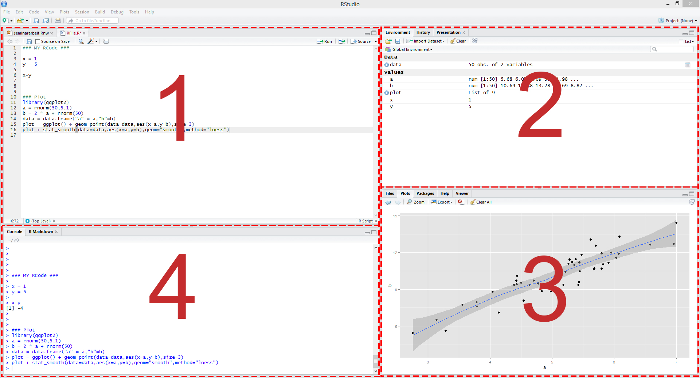

1 The first steps in R
1.1 RStudio for the first time
I highly recommend to install RStudio. For installation just follow the instructions on
https://rstudio.com/products/rstudio/download/#download
When you open RStudio, it is typically split in 4 panels as you can see in the figure below:

Figure 1: Illustration of RStudioThese panels show:
- Your script file, which is an ordinary text file with suffix “.R”. For instance, yourFavoritFileName.R. This file contains your code.
- All objects we have defined in the environment.
- Help files and plots.
- The console, which allows you to type commands and display results.
Some other terms that will be useful:
- Working directory: The file-directory you are working in. Useful commands: with getwd() you get the location of your current working directory and setwd() allows you to set a new location for it. This is very useful when you would like to load or save several files. You can just set your working directory globally and all files can be loaded or will be saved into this directory.
- Workspace: This is a hidden file (stored in the working directory), where all objects you use (e.g., data, matrices, vectors, variables, functions, etc.) are stored. Useful commands: ls() shows all elements in our current workspace and rm(list=ls()) deletes all elements in our current workspace. It is also possible to remove only some objects with rm(object1, object2).
1.2 Simple calculations
We start with a very basic calculation. Let’s type 1+1 into the console window and press enter. We get
## [1] 2i.e. the result of the calculation is returned.
Note that everything that is written after the #-sign is ignored by R, which is very useful to comment your code. The second window above, starting with ##, shows the output.
Let’s consider a second calculation
## Error: <text>:2:0: unexpected end of input
## 1: 1+2+3+ # second calculation
## ^This calculation ended with an error. The reason is that the command can only processed if entered correctly.
## [1] 10A similar thing happens when parentheses are not closed.
## Error: <text>:2:0: unexpected end of input
## 1: 2*(2+3
## ^It will be helpful to use a script file, such as yourFavoritFileName.R, to store your R commands. Otherwise, you would have to type your code again when an error occurred. You can send single lines or marked regions of your R-code to the console by pressing the keys STRG+ENTER.
1.3 Assigments and matrix algebra
The assignment operator will be your most often used tool. Here is an example where a scalar variable is created:
## [1] 9## [1] 10Note: The <- assignment operator is an unusual syntax that you do not find in other programming languages. In many cases you can alternatively use the = operator. Typical R style uses the <- assignment operator due to some more in depth-differences and compatibility with older version of R. More on R style recommendations can be found in the tidyverse style guide. In simple settings, alternatives to <- are
## [1] 9or even
## [1] 4We consider now a vector, an object you will use frequently:
## [1] 1 3 5 6As discussed, ls() states the content of the workspace, whereas rm(list =ls()) deletes the workspace.
## [1] "all_eps" "b0" "b1" "calc_probs_asymp_normal" "calc_probs_consistency" "calc_rej_probs" "data_set"
## [8] "e" "E" "eps" "factorial" "fibonacci" "i" "labels"
## [15] "lm_result" "lm_result_rating" "lm_summary" "lm_summary_rating" "M" "mus" "my_2nd_function"
## [22] "my_dens" "my_function" "my_hc_vcov" "my_iv_model" "my_model" "my_sample" "myFirst.Array"
## [29] "myFirst.Dataframe" "myFirst.List" "n" "out" "p" "p1" "probs"
## [36] "results" "results2" "results3" "S" "sample" "slices" "temperatures"
## [43] "theta" "theta_hat" "time" "time2" "time3" "treatment" "U"
## [50] "v" "visualise.data" "x" "X" "y" "z" "Z"## character(0)In the next step we will consider some vector multiplication. There are three different ways to multiply a vector, namely element by element, using the inner product, or using the outer product. Element by element gives you a vector of the same dimension.
## [1] 1 9 25 36The function t() gives the transpose of a vector (or matrix). It is therefore tempting to calculate the inner product as
## [,1] [,2] [,3] [,4]
## [1,] 1 9 25 36but this does not give the desired answer. Insead, you have to use
## [,1]
## [1,] 71Note that R stores zTz as a matrix.
## [1] "matrix" "array"## [1] "numeric"Finally, we have the outer product that gives us a matrix
## [,1] [,2] [,3] [,4]
## [1,] 1 3 5 6
## [2,] 3 9 15 18
## [3,] 5 15 25 30
## [4,] 6 18 30 36In general, be very careful with %*% versus *. They are often both feasible, but yield different results!
You can also multiply a vector with a scalar:
## [1] 4 12 20 24A strength of R is that operations can be conducted for each element of the vector in one statement
## [1] 1 9 25 36## [1] 0.000000 1.098612 1.609438 1.791759## [1] -1.2402159 -0.3382407 0.5637345 1.0147221So far, we have seen the function c() that can be used to combine objects. All function calls use the same general notation: a function name is always followed by round parentheses. Sometimes, the parentheses include arguments, such as
## [1] 1 2 3 4 5With square brackets you can access particular elements, such as
## [1] 1 2 3We will next define a matrix and perform matrix-vector multiplication.
## [,1] [,2] [,3]
## [1,] 1 4 7
## [2,] 2 5 8
## [3,] 3 6 9## [1] 3 3## NULL## [1] 5Element-by-element multiplication for M is given by
## [,1] [,2] [,3]
## [1,] 1 16 49
## [2,] 4 25 64
## [3,] 9 36 81Standard matrix multiplication is again done using %*% such as
## [,1] [,2] [,3]
## [1,] 30 66 102
## [2,] 36 81 126
## [3,] 42 96 150## [,1] [,2] [,3]
## [1,] 14 32 50
## [2,] 32 77 122
## [3,] 50 122 194If matrices and vectors have suitable dimensions, you can multiply them as follows:
## [,1]
## [1,] 30
## [2,] 36
## [3,] 42Similar to before, with square brackets you can excess particular elements, such as
## [1] 7 8 9## [1] 9Here are some more examples:
M[,1] # first column of M
M[3,3] # element in the third column and third row of M
z[c(1,4)] # first and fourth element of zLogical statements are also very useful. For example, if you want to know which elements in the first column of matrix M are strictly greater than 2:
## [1] FALSE FALSE TRUE## [1] 3Note: Logical operations return so-called boolean objects, i.e., either a TRUE or a FALSE. For instance, if we ask R whether 1>2 we get the answer FALSE.
1.4 Operators
We have alrady seen basic arithmetic operations such as
Decimals are declared with a “.”, not a comma
Exponents are declared with ^, i.e. \(2^3\) is written as
For mathematical calculations, only parentheses () can be used.
Frequently used mathematical functions are
sqrt() # square root
exp() # exponential function
log() # nat. Logarithm
log(...,10) # Logarithm with Base 10
abs() # absolute value
round(...,x) # rounding to x decimals.
pi
exp(1) # Eulers number
sin(),cos(),tan() # trigonemetric functions
min(), max() # returns the lowest/highest value of a vector/matrixAsa few examples enter the following calculations and make sure to understand the commands:
1.8+2
1.8-2
1.8*2
1.8/2
2+2*3
(2+2)*3
2^3
8^(1/3)
3^2
9^0.5
2^2*2+2
2^(2*((0.2+0.3)*(1+2)))+4
sqrt(2)
exp(1)
exp(2)
log(7.389056)
log(exp(3))
log(100,10)
abs(1.8-2)
round(sqrt(2),2)
round(sqrt(2),4)
pi
sin(pi/2)
sin(pi/2)
sin(pi)
tan(pi)
x=2+3i
y=4+1i
x
y
x+y
x*yAttention:
is interpreted as \(1.224606 \times 10^{-16}\). This is often exactly zero, but for internal memory purposes (R uses double-precision floating-point numbers and therefore only has up to 16 decimals), can be a rounding mistake.
1.5 Further data objects
Besides classical data objects such as scalars, vectors, and matrices there are three further data objects in R:
1.The array: A matrix but with more dimensions. Here is an example of a 2×2×2-dimensional array
- The list: In
listsyou can organize different kinds of data. E.g., consider the following example:
myFirst.List <- list("Some_Numbers" = c(66, 76, 55, 12, 4, 66, 8, 99),
"Animals" = c("Rabbit", "Cat", "Elefant"),
"My_Series" = c(30:1)) - The data frame: A
data.frameis alist-object but with some more formal restrictions (e.g., equal number of rows for all columns). As indicated by its name, adata.frame-object is designed to store data:
1.6 R help
There exist help files for all commands in R. For example consider the help file of the function sum(). You can access the help file with
The file usually contains the categories: Description, Usage, Arguments, Details, Value and References.
After the general description follows the syntax of the command. This usually indicates which (optional) arguments the command allows. Then follows na.rm, which indicates whether missing values (na) will be removed (rm). The default is FALSE.
## [1] 1 2 NA 4 5## [1] NA## [1] 12Details describes the exact calculation (trivial in this case), and some command specific characteristics. Value describes what is returned, in the case of sum() it is obviously a sum of numbers, given that numeric data was used as an input.
1.7 R packages
There are tons of R packages that are useful for different aspects of data analysis. Some packages that can help you make beautiful plots and that you might want check out are the package ggplot2 and the collection of packages tidyverse. You can install the packages with install.package(packagename). In order to use the package type library(package). The package has to be installed only once, but you have to load the package with library(package) every time you want to use it.
1.8 Exercises I
Exercise 1:
Try to shorten the notation of the following vectors as much as possible, using : notation:
x <- c(157, 158, 159, 160, 161, 162, 163, 164)x <- c(10, 9, 8, 7, 6, 5, 4, 3, 2, 1)x <- c(-1071, -1072, -1073, -1074, -1075, -1074, -1073, -1072, -1071)
Exercise 2:
The ´:´ operator can be used in more complex operations along with arithmetic operators, and variable names. Have a look at the following expressions, and write down what sequence you think they will generate. Then check with R.
(10:20) * 2105:(30 * 3)10:20*21 + 1:10/102^(0:5)
Exercise 3:
R has several functions for rounding. Let’s start with floor, ceiling, and trunc:
floor(x) rounds to the largest integer not greater than x
ceiling(x) rounds to the smallest integer not less than x
trunc(x) returns the integer part of x
Below you will find a series of arguments (x), and results (y), that can be obtained by choosing one or more of the 3 functions above (e.g.y <- floor(x)). Which of the above 3 functions could have been used in each case? First, choose your answer without using R, then check with R.
x <- c(300.99, 1.6, 583, 42.10)y <- c(300, 1, 583, 42)x <- c(152.34, 1940.63, 1.0001, -2.4, sqrt(26))y <- c(152, 1940, 1, -2, 5)x <- -c(3.2, 444.35, 1/9, 100)y <- c(-3, -444, 0, -100)x <- c(35.6, 670, -5.4, 3^3)y <- c(36, 670, -5, 27)
Exercise 4:
Consider the following vectors:
u <- c(5, 6, 7)
v <- c(2, 3, 4)
Perform the following operations:
- Add
uandv - subtract
vfromu - multiply
ubyvelement by element - divide
ubyvelement by element - calculate the inner product of
uandv - calculate the outer product of
uandv - raise
uto the power ofvelement by element
Then check your answer with R.